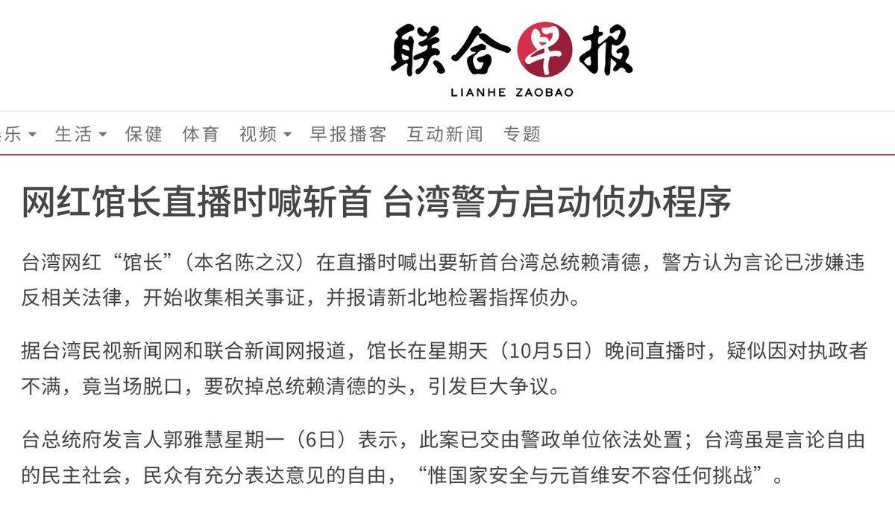

冰棍好烫喵 🍥🧊🍔🍟🍜🍣🍙🍧🍮🍩☕️💊🤤
@bghtnya
@whyyoutouzhele 八月十五杀馆长

李老师不是你老师
@whyyoutouzhele
10月5日晚，台湾网红“馆长”在直播中怒喊要“砍下赖清德狗头”。
6日，台湾警方认为其言论涉嫌违反相关法律，已启动侦办程序并向新北地检署报请指挥。
台湾总统府发言人郭雅慧回应称，警方将依法处理，“台湾虽保障言论自由，但涉及国家安全与元首安全的问题，不容挑战。” https://t.co/wpj58XzbGI https://t.co/HWp7a1B7IG